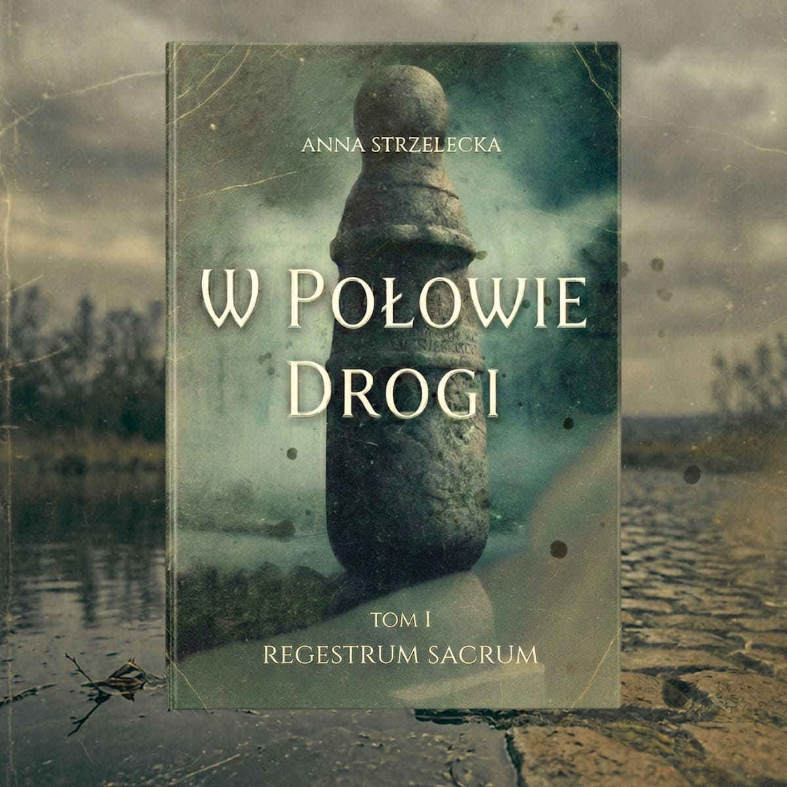

Tom IIMroczny kryminał historyczny o tajemnicach, które nie dają się pogrzebać
Zamów egzemplarz w przedsprzedażyLato jest duszne, a nadwarciańskie łąki spowija mgła, z której wyłania się postać zmarłej kobiety. Gdy po mieście rozchodzi się wieść, że Anna wróciła zza grobu, Konin ogarnia zaraza strachu.
Ktoś bezcześci jej mogiłę. Niedługo potem przy Słupie Milowym zostaje znalezione ciało jej męża. Ławnik Szymon Goryczka musi oddzielić ludowe wierzenia i zabobony od tego, co jest prawdą i rozwikłać zagadkę.
Pozostaje pytanie, czy to, co wstało z martwych, jest groźniejsze od tego, co drzemie w żywych?
Najpierw była Warta. Szła z południa na północ, wiła się jak wąż. Na zakręcie, gdzie woda płynie najwolniej, osiadł piasek. Z piasku zrobiła się wyspa, a na wyspie stanął kamień. Wielki piaskowiec wyglądał jak człowiek... jak kamienna baba, od wieków na straży. Nikt nie wie, kto go tu przywiódł. A Konin wyrósł wokół niego jak mech wokół kości. Drewniane domy, kościół, rynek... i mury – zawsze za słabe, bo miasto na wodzie, a ta podmywała fundamenty, zabierała stodoły, wchodziła nocami do piwnic i zostawiała muł. W nim ludzie znajdowali ryby, stare buty i czasem nawet zęby. Nie pytali czyje. Warta i tak nie zdradziłaby swoich tajemnic. Ale Baba stała niewzruszenie – kiedy woda wzbierała i opadała. W dżumy i w pożary. Litery blakły, piaskowiec kruszył się u podstawy, a ona stała. Przychodziły do niej kobiety ze swoimi sprawami – z solą, z ziołami, z modlitwą. Albo po ratunek. I kładły ręce na szorstkim kamieniu, który wtedy stawał się ciepły – jak człowiek. Mówiły między sobą, że Baba ma moc i że kiedy są w potrzebie, zabiera je z ludzkich oczu, pomiędzy żywych i umarłych... Mężczyźni mówili: zabobon, a kobiety wtedy żegnały się w pośpiechu. Ale w godzinie trwogi nogi same niosły je do kamienia. A on stał. Między żywymi i umarłymi, północą a południem. W połowie drogi między Kaliszem a Kruszwicą.